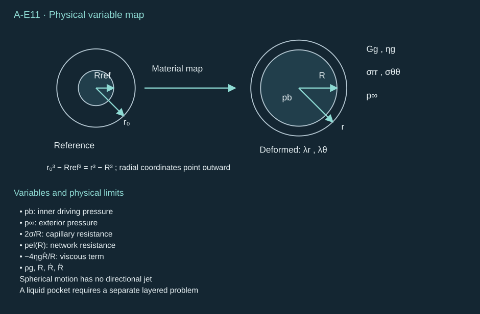
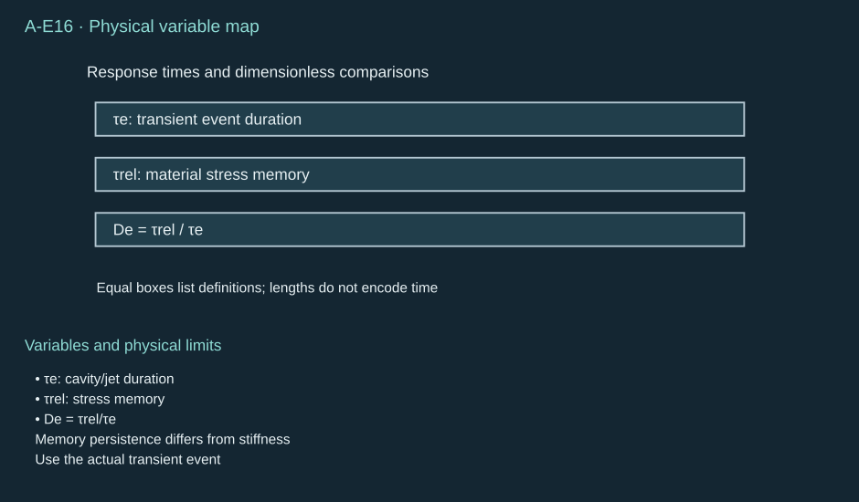
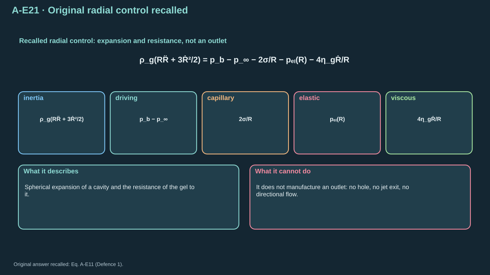

Hydrogel can locate PFC droplets, support liquid patterns and conform under small preload. Its network also stores energy, dissipates motion and changes transport. It can tear. Compare absorbed energy, phase source, motion, selective release, intact placement and reset. Smaller cavities or higher pressure leave overall improvement unresolved.
Toward an exposed meniscus or defined outlet; the carrier remains a liquid.
朝暴露液面或明确出口运动；载液保持液体状态。
Direct liquid displacement; wetting drift, spreading and neighboring flows can vary.
直接排开液体；润湿漂移、铺展和邻近流动可能发生变化。
Open liquid pocket supported by gel
凝胶支撑的开放液腔
Liquid leaves an opening while the gel wall deforms.
液体经开口离开，同时凝胶壁发生变形。
A located outlet and compliant support; moving walls consume, return or redirect energy.
定位出口与柔顺支撑；运动壁面会消耗、返还能量或改变其方向。
PFC embedded directly in bulk gel
PFC 直接嵌入体相凝胶
Initially into network deformation; an external liquid path must exist or be created.
起初转化为网络变形；必须已有或形成通往外部的液体路径。
Stable inclusion locations; large strain, trapped vapor, network rupture and solid contamination.
稳定的夹杂位置；大应变、滞留蒸气、网络破裂及固体污染。
Sealed cavity under a gel/composite stamp
凝胶／复合印章下的密封腔体
Boundary bulging and pressure transmission rather than an open liquid outlet.
通过边界鼓起与压力传递，而不是开放液体出口。
Distributed deformation and local peeling; this can be a blister actuator with a different release mechanism.
分布式变形与局部剥离；它可以是具有不同释放机制的鼓泡致动器。
Li et al. demonstrated a sealed hydrogel-composite stamp. Laser heating formed water vapor, deformed covering layers and released a platelet. This establishes a pressure–deformation–fracture route. External PFCjetting from bulk gel remains unestablished. The millisecond event requires separate justification before informing microsecond material laws. [R11]
Li 等展示了密闭水凝胶复合印章。激光加热形成水蒸气，使覆盖层变形并释放片状对象。这确立了压力—变形—断裂路径。体相凝胶中的 PFC 外部喷射尚未确立。毫秒事件用于微秒材料规律前，须另给依据。 [R11]
1. Intact spherical model
1. 完整球形模型
Use an infinite homogeneous isotropic incompressibleneo-Hookean medium. Its network remains continuous and intact. Existing cavity radii are stress-free Rref>0 and current R(t)>0. Material lies outside the cavity. Far-field radial stress is −p∞(t). Internal pressure pb(t) is spatially uniform. Interface tension σ is constant. Tensile Cauchy stress is positive. Radius points outward; positive speed means expansion. Omit gravity, nearby boundaries, outlets, drainage, damage, shell stress and phase slip.
Initially t=0, R=Rref, R˙=0, and the network is unstretched. Mechanical equilibrium requires pb(0)−p∞(0)=2σ/Rref. Laser and phase dynamics must supply later pb(t). Polymerization around a loaded inclusion can create a different stress-free shape. Initial liquid-core radius a0 defines PFC inventory. Determine it separately from reference and vapor-cavity radii.
Independent coordinate of the transient cavity event; the reference state is specified at zero.
瞬态腔体事件的独立坐标；参考状态规定在零时刻。
r0
Reference material radial coordinate
参考材料径向坐标
m
Labels a material shell in the stress-free configuration; held fixed for material motion.
标识无应力构形中的材料壳层；追踪材料运动时保持不变。
r
Current material radial coordinate
当前材料径向坐标
m
Current position of the shell labeled by r₀; distinct from current wall radius R.
由 r₀ 标识的壳层当前所在位置；不同于当前壁面半径 R。
Rref
Stress-free reference cavity radius
无应力参考腔体半径
m
Reference geometry for network stretch; not automatically an observed loaded cavity radius.
网络伸长的参考几何；不能自动等同于观测到的受载腔体半径。
R
Current cavity radius
当前腔体半径
m
Locates the moving cavity boundary in the current configuration.
定位当前构形中的运动腔体边界。
R˙
Cavity wall radial velocity
腔体壁面径向速度
m s⁻¹
First time derivative of R; positive expansion and negative inward motion.
R 的一阶时间导数；正值表示膨胀，负值表示向内运动。
R¨
Cavity wall radial acceleration
腔体壁面径向加速度
m s⁻²
Second time derivative of R in the inertial radial balance.
惯性径向平衡中的 R 的二阶时间导数。
a0
Initial liquid-PFC core radius
初始液态 PFC 核半径
m
Inventory geometry; neither R nor the network reference radius is silently substituted for it.
存量几何；不能默默用 R 或网络参考半径替代它。
λr
Radial principal stretch
径向主伸长
1
Ratio of current to reference radial line elements at a material shell.
材料壳层处当前与参考径向线元的比值。
λθ
First tangential principal stretch
第一切向主伸长
1
Circumferential line-element ratio in the θ direction.
θ 方向周向线元的比值。
λϕ
Second tangential principal stretch
第二切向主伸长
1
Circumferential line-element ratio in the φ direction; equals the other tangential stretch under spherical symmetry.
φ 方向周向线元的比值；在球对称下等于另一切向伸长。
F
Deformation-gradient tensor
变形梯度张量
1
Maps reference line elements into the current configuration.
将参考线元映射到当前构形。
B
Left Cauchy–Green tensor
左 Cauchy—Green 张量
1
Product of deformation gradient and its transpose; enters the neo-Hookean stress.
变形梯度与其转置的乘积；进入 neo-Hookean 应力。
Gg
Gel-network shear modulus
凝胶网络剪切模量
Pa
Elastic material parameter controlling stored network resistance; relevant strain/rate dependence must be validated.
控制所储存网络阻力的弹性材料参数；相关应变／速率依赖需验证。
ηg
Represented Kelvin–Voigt viscosity
所描述的 Kelvin—Voigt 黏度
Pa s
Coefficient of the adopted viscous stress; avoid counting the same solvent dissipation twice.
所采用黏性应力的系数；避免对同一溶剂耗散重复计数。
ρg
Effective medium mass density
有效介质质量密度
kg m⁻³
Density of the moving surrounding medium, not the PFC core or vapor alone.
周围运动介质的密度，不是单独的 PFC 核或蒸气密度。
σ
Cavity-interface tension
腔体界面张力
N m⁻¹
Constant coefficient for the declared interface; separate from network elastic stress.
指定界面的恒定系数；与网络弹性应力不同。
Te
Elastic Cauchy-stress tensor
弹性 Cauchy 应力张量
Pa
Tensile-positive stress contributed by the network constitutive law; e denotes elasticity.
网络本构规律产生的应力，拉伸为正；e 表示弹性。
T
Total Cauchy-stress tensor
总 Cauchy 应力张量
Pa
Includes elastic and represented viscous contributions in the radial momentum balance.
包含径向动量平衡中的弹性及所描述黏性贡献。
χ
Incompressibility multiplier
不可压缩约束乘子
Pa
Unknown isotropic stress multiplier; unlike Chapter 3’s interaction parameter, it has pressure units here.
未知各向同性应力乘子；与第三章的相互作用参数不同，此处具有压力单位。
pb
Uniform cavity absolute pressure
均匀腔内绝对压力
Pa
Supplied by the laser/phase source calculation, not derived from the elastic resistance.
由激光／相变源计算提供，不由弹性阻力推导。
p∞
Far-field absolute pressure
远场绝对压力
Pa
Sets the exterior radial-traction condition under the stated stress convention.
在指定应力约定下确定外部径向牵引条件。
pel
Signed elastic cavity resistance
带符号弹性腔体阻力
Pa
Stress-difference integral resisting expansion; its intact-network formula is not a fracture threshold.
抵抗膨胀的应力差积分；其完整网络公式不是断裂阈值。
ur
Radial material velocity
材料径向速度
m s⁻¹
Velocity of the surrounding material, consistent with the stated no-phase-slip control.
周围材料的速度，与所声明无相间滑移对照一致。
D
Symmetric velocity-gradient tensor
对称速度梯度张量
s⁻¹
Strain-rate tensor used by the represented viscous constitutive law.
所描述黏性本构规律使用的应变率张量。
Wg
Stored network elastic work
储存的网络弹性功
J
Integrated recoverable network work measured from the stress-free reference cavity.
从无应力参考腔体起算的可恢复网络功积分。
Kg
Surrounding-medium kinetic energy
周围介质动能
J
Integrated energy of the radial exterior motion.
外部径向运动能量的积分。
Eσ
Cavity surface energy
腔体表面能
J
Interface-area energy under the declared constant-tension assumption.
指定恒张力假设下的界面面积能量。
Pdis
Nonnegative viscous dissipation power
非负黏性耗散功率
W
Rate of irreversible mechanical-energy loss; differs from recoverable storage.
不可逆力学能损失速率；不同于可恢复储能。
τe
Event duration
事件持续时间
s
Specified loading/evolution time used to test material-response assumptions.
检验材料响应假设采用的指定受载／演化时间。
τrel
Measured stress-relaxation time
测量的应力松弛时间
s
Independently identified memory time; not Kelvin–Voigt retardation time.
独立确定的记忆时间；不是 Kelvin—Voigt 延迟时间。
Lg
Specified gel communication length
指定凝胶传播长度
m
Distance over which shear support or solvent drainage must communicate.
剪切支撑或溶剂排水需要传播的距离。
De
Deborah number
Deborah 数
1
Stress-relaxation time divided by event duration in the declared memory test.
在指定记忆检验中为应力松弛时间除以事件持续时间。
ts
Shear communication time
剪切传播时间
s
Small-disturbance elastic communication scale over Lg; not a universal cavity-collapse time.
跨越 Lg 的小扰动弹性传播尺度；不是通用腔体塌缩时间。
tporo
Poroelastic drainage time scale
孔弹性排水时间尺度
s
Diffusion-scale solvent/network pressure equilibration under the stated linear approximation.
在指定线性近似下溶剂／网络压力平衡的扩散时间尺度。
Powers, products and comparisons use ordinary meanings. Subscripts label directions, materials or states. d/dr differentiates current radius. Partial derivatives fix other coordinates. ∫ uses the stated limits; lim denotes limits; π is dimensionless. Each display defines all visible symbols. Gaudron, Warnez and Johnsen supply the nonlinear-elastic cavity framework. The transformations and work calculation below follow the stated spherical assumptions. [R13]
Step 1 — Conserve material volume. Follow a shell from reference to current radius. Incompressibility preserves volume between shell and cavity. Differentiate at fixed time for radial stretch. Every divided radius is strictly positive.
The same network shell moves outward while thinning radially and stretching tangentially.
同一网络球壳向外移动，同时径向变薄、切向伸长。
Step 2 — Apply neo-Hookean stress. Each principal stress contains a common incompressibility multiplier and stretch contribution. Subtract radial from tangential stress to remove the multiplier. This constitutive assumption requires material validation.
Radial and tangential stretches produce different network stresses around the cavity.
空腔周围的径向与切向伸长产生不同的网络应力。
Step 3 — Integrate spherical elastic balance. Radial stress derivative equals twice tangential-minus-radial stress divided by radius. Wall and far-field tractions determine elastic resistance. The same stress-difference integral enters dynamic balance later. That use retains the separate dynamic inertia.
The wall pressure supports capillary traction and the accumulated elastic resistance.
壁面压力同时支撑毛细牵引与积分后的弹性阻力。
Step 4 — Transform radius with its Jacobian. For R>Rref, set q=r0/r. It rises from Rref/R to one. Differentiate its cube and cancel the positive square. Finite exterior positions have positive 1−q3. The undeformed transformation is degenerate. Evaluate its zero resistance directly.
Elastic resistance follows from the full stretch field, not from a guessed constant pressure.
弹性阻力来自完整伸长场，而不是猜测的恒定压力。
The rows apply Eq. (A-E04), integrate 1+q3, evaluate endpoints, then multiply. This reproduces Gaudron et al., Eq. (2.18). Large expansion approaches a constitutive pressure plateau. Fracture threshold remains unestablished. Finite geometry, prestress, stiffening or rupture can change the response. [R13]
Conventions and conditions.d/dR is the radius derivative (giving Pa m⁻¹ here); lim takes the positive large-radius-ratio limit; ∞ denotes an unbounded ratio.
约定与条件。d/dR 表示半径导数（此处单位为 Pa m⁻¹）；lim 取正的大半径比极限；∞ 表示比值无界。
Zero deformation gives zero elastic resistance, and positive expansion raises it monotonically.
零变形给出零弹性阻力，正向膨胀使阻力单调增大。
3. Elastic work
3. 弹性功
Step 5 — Integrate pressure against volume change. Multiply elastic pressure by spherical area. Insert Eq. (A-E05) and integrate each dummy-radius power. The antiderivative of ξ−2 is −1/ξ. Keep both endpoints to enforce zero reference work.
The area factor converts radius increments into cavity volume increments before integrating work.
先用面积因子将半径增量转化为腔体体积增量，再积分功。
The lower endpoint is (5/3−2+1)Rref3=2Rref3/3. Subtract it in the final row. Pressure can plateau while work grows with volume. Units are Pa m³ = J. Differentiating work recovers pressure × area.
下端点为 (5/3−2+1)Rref3=2Rref3/3，在末行减去。压力可形成平台而功随体积增加。单位为 Pa m³ = J。对功求导可恢复压力 × 面积。
Symbols before Eq. (A-E08).
式（A-E08）前的符号定义。
First individual definition第一项单独定义
Second individual definition第二项单独定义
Wg is elastic work (J)
Wg 为弹性功（J）
pel resistance (Pa)
pel 为阻力（Pa）
Gg>0 shear modulus (Pa)
Gg>0 为剪切模量（Pa）
R — Current cavity radius (m)
R — 当前腔体半径（m）
Rref>0 — Stress-free reference cavity radius (m)
Rref>0 — 无应力参考腔体半径（m）
δR=R−Rref a small radius change (m), with ∣δR∣/Rref≪1
δR=R−Rref 为小半径变化（m），满足 ∣δR∣/Rref≪1
π is dimensionless
π 为无量纲量
Conventions and conditions.d/dR is differentiation in radius; O denotes terms bounded by a constant times the indicated scale as that ratio tends to zero.
约定与条件。d/dR 表示对半径求导；O 表示当该比值趋于零时，被某常数乘所示尺度界定的项。
(A-E08) · Work-conjugacy and small-deformation checks
Near the reference cavity, pressure is linear in radius change and stored work is quadratic.
在参考腔体附近，压力与半径变化呈线性关系，储存功则呈二次关系。
Differentiate Eq. (A-E05) at reference radius for the linear term. Integrate it with area 4πRref2 for quadratic work. A reference-volume strain-energy integral also recovers Eq. (A-E07). Intact hyperelastic storage is reversible. Its useful return depends on timing and geometry. Distinguish stored energy from irreversible heat loss.
Step 6 — Add Kelvin–Voigt viscosity. Total stress adds 2ηgD to elastic stress. D is symmetric velocity gradient. Incompressibility and equal material/wall normal velocity give the radial field. Expansion produces negative radial gradient and positive tangential extension.
步骤 6——加入 Kelvin–Voigt 黏性。总应力在弹性应力上加入 2ηgD，其中 D 为对称速度梯度。不可压缩性及材料／壁面法向速度相等给出径向流场。膨胀产生负径向梯度及正切向伸长。
Symbols before Eq. (A-E09).
式（A-E09）前的符号定义。
First individual definition第一项单独定义
Second individual definition第二项单独定义
T — Total Cauchy stress tensor (Pa)
T — 总柯西应力张量（Pa）
Te — Elastic Cauchy stress tensor, tension positive (Pa)
The viscous term derives from the surrounding-medium strain rate, not from bubble mass.
黏性项来自周围介质的应变率，而不是气泡质量。
Step 7 — Integrate radial momentum. Retain fixed-position and convective acceleration. Eq. (A-E09) gives an integrable acceleration field. Wall total stress is −pb+2σ/R; far-field stress is −p∞. Integrate their difference to fix the signs.
r≥R>0 — Current material radial position outside the cavity (m)
r≥R>0 — 空腔外部的当前物质径向位置（m）
t time (s)
t 为时间（s）
R˙ — Cavity-wall radial velocity (m s⁻¹)
R˙ — 空腔壁面径向速度（m s⁻¹）
R¨ wall speed/acceleration (m s⁻¹, m s⁻²)
R¨ 为泡壁速度／加速度（m s⁻¹、m s⁻²）
ρg>0 is density (kg m⁻³)
ρg>0 为密度（kg m⁻³）
ηg≥0viscosity (Pa s)
ηg≥0 为黏度（Pa s）
Trr — Total radial Cauchy stress (Pa)
Trr — 总径向柯西应力（Pa）
Tθθ — Total polar tangential Cauchy stress (Pa)
Tθθ — 总极角切向柯西应力（Pa）
R — Current cavity radius (m)
R — 当前腔体半径（m）
Conventions and conditions.∂ denotes fixed-other-coordinate derivatives and the integrals run through the exterior to infinity; Integrated acceleration times density has units Pa.
Integrating the material acceleration and the viscous stress difference gives their distinct radial contributions.
对材料加速度与黏性应力差积分，得到各自不同的径向贡献。
Symbols before Eq. (A-E11).
式（A-E11）前的符号定义。
First individual definition第一项单独定义
Second individual definition第二项单独定义
ρg is effective medium density (kg m⁻³)
ρg 为有效介质密度（kg m⁻³）
R>0 is the cavity radius (m)
R>0 为腔体半径（m）
R˙ — Cavity-wall radial velocity (m s⁻¹)
R˙ — 空腔壁面径向速度（m s⁻¹）
R¨ — Cavity-wall radial acceleration (m s⁻²)
R¨ — 空腔壁面径向加速度（m s⁻²）
pb — Cavity pressure (Pa)
pb — 空腔压力（Pa）
p∞ — Far-field pressure (Pa)
p∞ — 远场压力（Pa）
pel(R) — Signed elastic cavity-pressure resistance (Pa)
pel(R) — 带符号弹性空腔压力阻力（Pa）
σ is tension (N m⁻¹)
σ 为张力（N m⁻¹）
ηg is the represented medium viscosity (Pa s)
ηg 为所描述介质的黏度（Pa s）
Conventions and conditions. Each term has units Pa.
约定与条件。 每一项的单位均为 Pa。
(A-E11) · Derived intact-medium radial control
推导得到的完整介质径向对照模型
ρg(RR¨+23R˙2)=pb−p∞−R2σ−pel(R)−R4ηgR˙.

The spherical control quantifies cavity work and wall motion before any directional-flow calculation.
球形控制模型先量化腔体功与泡壁运动，再进行定向流动计算。
Integrating the stress derivative gives far-field minus wall stress. Subtract both stress-difference integrals for Eq. (A-E11). Setting Gg=0 recovers the liquid model. Viscosity resists expansion and collapse with opposite pressure signs. If fitted ηg includes solvent loss, count that dissipation once. Separate solvent/network models need relative-motion closure. Appreciable phase slip changes the wall-kinematic assumption.
Step 8 — Multiply by volume-change rate. The radial field gives kinetic energy. The checked elastic-work derivative supplies storage rate. Viscosity changes signed acceleration but always dissipates mechanical energy. Its loss contains squared speed.
Pressure work divides into inertia, recoverable network energy, surface energy and viscous loss.
压力功分配到惯性、可恢复的网络能、表面能和黏性损耗。
5. Pressure and work example
5. 压力与功示例
Prescribe shear modulus 20 kPa, reference radius 5 µm, current radius 30 µm and density 1000 kg m⁻³. These are teaching inputs. Calculate resistance and stored work first. Sixfold wall stretch assumes an intact neo-Hookean network. Validate that assumption for any proposed gel.
Conventions and conditions. The numbers 5 and 30 in radius ratios both use µm. Powers denote numerical exponents; Pa means pascal, J joule, and the cross denotes multiplication..
This soft network still stores several nanojoules when the cavity radius expands sixfold.
腔体半径膨胀六倍时，即使这个柔软网络也会储存数纳焦耳能量。
Prescribe net work pressure 100 kPa over the same volume increase. This gives 11.2574 nJ. Network storage consumes 40.1163%. Residual 6.74133 nJ bounds kinetic, surface and loss increments in this artificial ledger. External jet energy remains unestablished. Use the surface-energy increment so initial energy cancels consistently.
The elastic cost occupies a finite fraction of the work budget even though its pressure is below 100 kPa.
即使弹性压力低于 100 kPa，其能量代价也占据功预算的有限份额。
Prescribe viscosity 0.010 Pa s, radius 30 µm and inward speed −10 m s⁻¹. The signed momentum contribution is +13.3333 kPa. Dissipative power is +1.50796 mW. Positive collapse resistance still removes energy. Total dissipation requires integration over the velocity history.
规定黏度 0.010 Pa s、半径 30 µm、向内速度 −10 m s⁻¹。带符号动量项为 +13.3333 kPa，耗散功率为 +1.50796 mW。正塌缩阻力仍消耗能量。总耗散需对速度历程积分。
Symbols before Eq. (A-E15).
式（A-E15）前的符号定义。
First individual definition第一项单独定义
Second individual definition第二项单独定义
pvisc,RHS is the signed viscous pressure term on the radial equation's right-hand side (Pa)
pvisc,RHS 为径向方程右侧的带符号黏性压力项（Pa）
Pdis is dissipated power (W)
Pdis 为耗散功率（W）
ηg=0.010 Pa s is illustrative viscosity
ηg=0.010 Pa s 为示例黏度
R=30×10−6 m radius
R=30×10−6 m 为半径
R˙=−10 m s⁻¹ wall speed
R˙=−10 m s⁻¹ 为泡壁速度
π the circle constant (dimensionless)
π 为圆周率（无量纲）
Conventions and conditions. RHS labels that side; The number 100 is the squared speed in m² s⁻².
Inward motion changes the pressure sign but leaves dissipated power positive.
向内运动改变压力项符号，但耗散功率仍为正。
6. Material memory and transport times
6. 材料记忆与输运时间
Step 9 — Compare measured relaxation time with event duration. Large Deborah number means stress memory persists during the event. Infinite stiffness remains unestablished. Small Deborah number permits relaxation. Confinement and solvent drainage remain separate questions. A relaxation spectrum can require several times.
τrel>0 is an independently identified network stress-relaxation time (s)
τrel>0 为独立确定的网络应力松弛时间（s）
τe>0 is the specified cavity/jet event duration (s)
τe>0 为指定的腔体／射流事件持续时间（s）
Conventions and conditions. Subscripts rel and e label relaxation and event respectively.
约定与条件。 下标 rel、e 分别表示松弛与事件。
(A-E16) · Response-time definition
响应时间的定义
De:=τeτrel.

The event duration determines which part of the network response can act before the jet or load arrives.
事件持续时间决定网络响应的哪一部分能在射流或载荷到达前发挥作用。
In Kelvin–Voigt shear, held strain leaves constant elastic stress after strain rate vanishes. Releasing stress instead gives exponential strain recovery. Its retardation time is ηg/Gg. Distinguish this recovery time from stress relaxation.
Kelvin–Voigt strain recovery illustrates what its parameter ratio means and what it does not mean.
Kelvin–Voigt 应变恢复说明其参数比值的意义及不能代表的意义。
Step 10 — Compare spatial communication times. Shear speed estimates small-strain network motion. Ideal liquid collapse estimates radial carrier inertia. Use comparison length 30 µm for both. Their time ratio is 2.44464. Global shear equilibration can therefore be slow relative to liquid collapse. Check nonradial support dynamics. The spherical equation already retains radial inertia.
The gel communication estimate exceeds the ideal liquid-collapse reference for the declared inputs.
对已声明输入，凝胶传播时间估计大于理想液体塌缩参考时间。
Low shear modulus leaves rapid compression resistance unresolved. Longitudinal motion also depends on bulk modulus. Restore compressibility for finite acoustic travel or high wall speed. The incompressible spherical control idealizes that propagation. Shock pressure and arrival time require a compressible model.
Md>0 storage/constrained drained modulus adopted for this scalar approximation (Pa)
Md>0 为该标量近似采用的储存／受约束排水模量（Pa）
t time (s)
t 为时间（s）
Dporo diffusion coefficient (m² s⁻¹)
Dporo 为扩散系数（m² s⁻¹）
Lg drainage length (m)
Lg 为排水长度（m）
tporo drainage time estimate (s)
tporo 为排水时间估计（s）
Conventions and conditions.∇, ∇⋅, ∇2 are gradient, divergence and Laplacian in space; the dot here is the vector divergence operator, not an equation separator; ∼ means scaling estimate.
Pressure gradients drive solvent through the network, producing a length-dependent drainage time.
压力梯度驱动溶剂通过网络，产生依赖长度的排水时间。
Insert Darcy flux into conservation. Constant coefficients factor out of the derivatives. Balance time and second spatial derivatives over Lg for drainage time. Primary measurements support this scaling; actual permeability and modulus require characterization. Prescribe permeability 10−17 m², modulus 60 kPa, viscosity 0.001 Pa s and length 30 µm. Drainage time is 1.5 s. A 3 µs event is approximately undrained at that length. Local solvent motion remains possible. Primary drainage study.
Gel stabilization of PFCjets: Not established. Brujan et al. observed deformation, recoil, both jet directions and boundary-material ejection. Their reported 960 m s⁻¹ maximum belongs to one laser-bubble/gel geometry. It supplies a counterexample to universal stabilization. PFC transfer limits require their own measurements. [R12]
凝胶稳定 PFC射流尚未确立。Brujan 等观测到变形、回弹、双向射流及边界材料喷出。其报告的 960 m s⁻¹ 最大值属于特定激光气泡／凝胶几何，可反驳普遍稳定化判断。PFC 转印极限需要独立测量。 [R12]
Test all four architectures. Open pockets need coupled liquid momentum, wall traction and outlet shape. Bulk embedding needs an existing or rupture-created liquid path. Alternatively, identify solid deformation as the actuator. Sealed cavities need pressure–layer–fracture coupling. In film/PVC stacks, distinguish direct film loading from transmission through intact PVC. Specify release interface and payload stress for each route.
Report verified single-event pressure or finite-mass speed separately from repeatable intact transfer. Gel can trade peak speed for peeling control or lower scatter. Improved alignment can coexist with reduced useful impulse. The radial formula leaves these tradeoffs unresolved. Missing: rate laws, inclusion/reference geometry, phase and damage kinetics, outlet evolution, release and landing laws.
Compare an existing outlet in rigid and gel-confined cavities. At 2 nJ source work and a 5 μm outlet radius, peak speeds are 15.376 and 1.625 m/s. The sealed control emits zero liquid.
These initialized ideal-gas controls describe expansion through an existing channel. Laser activation, PFCphase change, rupture, collapse jets, and impact remain outside their scope.
Compare PFP and PFH across droplet size, gel modulus, and viscosity. The model retains finite PFC mass and a liquid shell. Sixty stationary and six seeded transient comparisons pass.
Trace matter and force paths in the three gel actuators.
追踪三种凝胶致动器中的物质与传力路径。
Explain the mechanism, assumptions, and limits in your own words.
用自己的话解释机制、假设与限制。
Reference answer and mastery criteria参考答案与掌握标准
Symbols before Eq. (A-E21).
式（A-E21）前的符号定义。
First individual definition第一项单独定义
Second individual definition第二项单独定义
ρg is effective exterior density (kg m⁻³)
ρg 为外部有效密度（kg m⁻³）
R>0 cavity radius (m)
R>0 为腔体半径（m）
R˙ — Cavity-wall radial velocity (m s⁻¹)
R˙ — 空腔壁面径向速度（m s⁻¹）
R¨ — Cavity-wall radial acceleration (m s⁻²)
R¨ — 空腔壁面径向加速度（m s⁻²）
pb — Cavity pressure (Pa)
pb — 空腔压力（Pa）
p∞ — Far-field pressure (Pa)
p∞ — 远场压力（Pa）
pel — Signed elastic cavity resistance (Pa)
pel — 带符号弹性腔体阻力（Pa）
σ tension (N m⁻¹)
σ 为张力（N m⁻¹）
ηg represented medium viscosity (Pa s)
ηg 为所描述介质的黏度（Pa s）
Conventions and conditions. This quoted original formula has the intact spherical, no-slip assumptions of Eq; (A-E11).
约定与条件。 这一引用的原始公式采用式（A-E11）的完整球形、无滑移假设。
(A-E21) · Original radial control recalled
回顾原始径向对照模型
ρg(RR¨+23R˙2)=pb−p∞−R2σ−pel(R)−R4ηgR˙.

A radial model describes expansion and resistance; it does not manufacture an outlet.
径向模型描述膨胀及阻力，不会凭空产生出口。
Identify where displaced matter can go. Liquid sites and open pockets can emit carrier through an outlet. Bulk inclusions may inflate without external liquid emission. Rupture or channels add damage and contamination mechanisms. Sealed cavities can bend covers and drive cracks without an emitted jet. The hydrogel stamp paper establishes this sealed pressure–deformation–release route.
The spherical model gives intact-medium pressure and work. Jet direction needs a spatial moving-interface model. Blisters and intact PVC paths need solid/interface mechanics. State the required closure for each architecture. Activation leaves carrier emission and selective transfer unresolved.
Pressure resistance and elastic work answer different parts of the feasibility calculation.
压力阻力与弹性功回答可行性计算中的不同部分。
At modulus 20 kPa and 5 → 30 µm expansion, resistance is 43.3256 kPa. Network work is 4.51604 nJ. Constant net pressure 100 kPa supplies 11.2574 nJ over the same volume. Storage is 40.1163%. Remaining surface, viscous and kinetic demands require the full work balance. Reference 5 µm describes the cavity/network state. PFC core size needs separate identification.
The 5Gg/2 plateau follows the intact constitutive model. Fracture and jet stability remain unestablished. Work still grows with volume; real networks can stiffen or tear. Recoil may return storage late, sideways or into damage. Viscous dissipation stays nonnegative. Useful conversion requires phase-pressure history, moving geometry and energy partition.
Separates recoverable storage from irreversible viscosity and identifies damage, timing and nonspherical flow as unresolved links.
区分可恢复储存与不可逆黏性，指出损伤、时序和非球形流动仍是未闭合环节。
Which matched measurements establish improved PFC transfer with gel?
哪些匹配测量能确立凝胶改善 PFC 转印？
Explain the mechanism, assumptions, and limits in your own words.
用自己的话解释机制、假设与限制。
Reference answer and mastery criteria参考答案与掌握标准
Symbols before Eq. (A-E23).
式（A-E23）前的符号定义。
First individual definition第一项单独定义
Second individual definition第二项单独定义
De is dimensionless event Deborah number
De 为无量纲事件 Deborah 数
τrel measured stress-memory time (s)
τrel 为实测应力记忆时间（s）
τe event duration (s)
τe 为事件持续时间（s）
ts — Shear crossing-time estimate (s)
ts — 剪切跨越时间估计（s）
tporo — Drainage-time estimate (s)
tporo — 排水时间估计（s）
Lg is a specified length (m)
Lg 为指定长度（m）
Gg shear modulus (Pa)
Gg 为剪切模量（Pa）
ρg density (kg m⁻³)
ρg 为密度（kg m⁻³）
μl solvent viscosity (Pa s)
μl 为溶剂黏度（Pa s）
kperm permeability (m²)
kperm 为渗透率（m²）
Md adopted drained storage modulus (Pa)
Md 为所采用的排水储存模量（Pa）
Conventions and conditions.∼ denotes scaling and the square root is the small-strain shear-speed estimate; These recall Eqs; (A-E16), (A-E18) and (A-E20).
A fair comparison follows the delivered load into the intended interface and the final placement.
公平比较要跟踪实际载荷进入目标界面及最终定位。
Compare all architectures with matched PFC inventory, absorber, absorbed energy and initial temperature. Match outlet and release interface where possible. Measure unavoidable architecture changes and report conditional comparisons. Characterize network response at event strain, rate and temperature. Test shell survival and heat deposition. Shear estimate 6.7082 µs differs from liquid-collapse reference 2.7440 µs. Actual gel-cavity time and longitudinal load remain unresolved.
Synchronize cavity, liquid composition, solid motion, calibrated load and crack images. Compare independent-shot distributions, intact placement, contamination and reset. Stabilization means reduced angle, speed, mass or footprint variability at sufficient load. One smaller bubble leaves that result unestablished. Report single-event maxima separately from repeatable transfer. Missing rate mechanics, permeability, phase kinetics or fracture data remain explicit inputs.
Defines a fair absorbed-energy/material/geometry comparison while retaining each architecture and both film/PVC load paths.
定义公平的吸收能量／材料／几何比较，同时保留每种结构及两条薄膜／PVC 载荷路径。
Distinguishes stress memory, shear communication, solvent drainage and longitudinal compression, with the assumptions of each estimate.
区分应力记忆、剪切传播、溶剂排水与纵向压缩，并说明各估计的假设。
Links synchronized mechanism measurements to useful impulse, selective fracture, intact placement, variability and reset; separates extreme output from repeatable transfer.
将同步机制测量连接到有效冲量、选择性断裂、完整定位、变异与复位；区分极端输出与可重复转印。
Submit your three answers
提交三个回答
Answer in your own words, in either language. Paste your answers into the teaching chat. Review covers reasoning, assumptions, and limits. All three accepted answers establish appendix mastery.